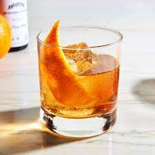

Old-Fashioned Recipes

Description
"The old fashioned is a cocktail made by muddling sugar with bitters and water, adding whiskey (typically rye or bourbon), and garnishing with an orange slice or zest and a cocktail cherry. It is traditionally served with ice in an old fashioned glass (also known as a rocks glass).
" Ingredients
- 1 teaspoon sugar
- 3 dashes Angostura bitters
- 1 teaspoon water
- 2 ounces bourbon (or rye whiskey, if preferred)
- Garnısh:orange twist
Steps
- Add the sugar and bitters into a mixing glass, then add the water, and stir until the sugar is nearly dissolved.
- Fill the mixing glass with ice, add the bourbon, and stir until well-chilled.
- Strain into a rocks glass over one large ice cube.
- Express the oil of an orange twist over the glass, then drop into the glass to garnish.